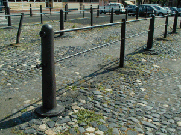
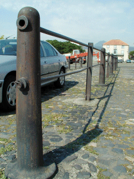

|

|
Des grandes foires animaient la ville plusieurs
fois par an et les éleveurs des environs venaient
exposer leurs animaux sur le foirail.
Les bêtes étaient attachées
aux barres de métal à l'aide de cordes et les
maquignons circulaient entre les rangs.
Une partie a été
préservée mais comment éviter les
voitures ?
On voit le Puy de Dôme au fond.
|

|